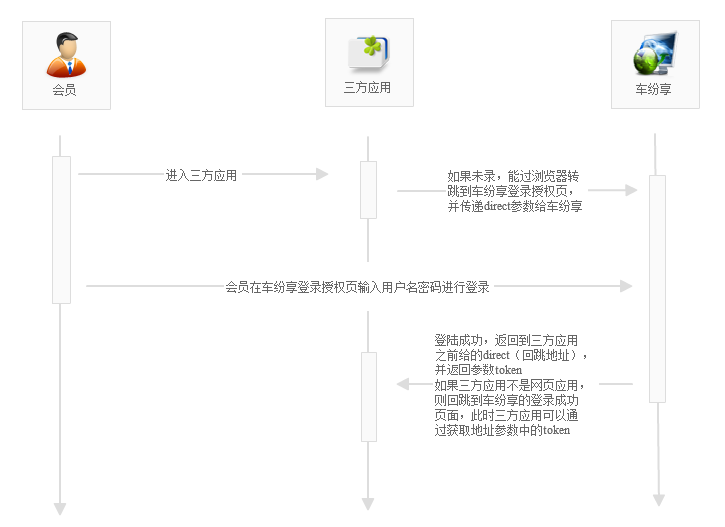

开放平台（ Open Platform）是基于车纷享系统业务的开放平台，提供外部合作伙伴参与服务车纷享用户的各类原数据，例如API、账号体系、数据安全等。是大车纷享基础服务的重要开放途径，将推动汽车租赁管理、合作、创新、进化，并最终促成新汽车共享文明生态圈。我们的使命是把车纷享的车辆、用户、订单、管理等一系列基础服务，开放给有需要的合作商、开发者。
调用API ，必须传入系统参数和应用参数。系统参数详细介绍如下；应用参数则根据不同API 具体入参，更多请参考API 文档。
1、系统参数
| 名称 |
类型 |
是否必须 |
描述 |
| method |
string |
是 |
API接口名称，同时调用多个接口，多个接口之间用半角逗号分开 |
| timestamp |
string |
是 |
时间戳，格式为yyyy-mm-dd HH:mm:ss，例如：2015-01-01 13:52:03。API服务端允许客户端请求时间误差为10分钟。 |
| appid |
string |
是 |
车纷享分配给接入者的接入帐号 |
| token |
string |
否 |
当某些接口需要授权时需要传入用户的token,不需要时传空 |
| params |
string |
是 |
应用参数集，根据method对应不同的接口，拼成{key:value,...}格式的json串，多个接口同时调用时拼成[{key:value,...},{key:value,...},...]格式的json串(注意与接口位置对齐) |
| sign |
string |
是 |
对 API 调用参数（除sign外）进行 md5 加密获得。具体方法参考开放平台参数签名 |
2、应用参数
请参考API文档说明
3、签名sign
调用API 时需要对请求参数进行签名验证，开放平台服务器也会对该请求参数进行验证是否合法的。方法如下：
根据参数名称（除签名和图片）将所有请求参数按照字母先后顺序排序:key + value .... key + value
例如：将foo=1,bar=2,baz=3 排序为bar=2,baz=3,foo=1，参数名和参数值链接后，得到拼装字符串bar2baz3foo1
系统只支持MD5加密方式:
md5：将secret 拼接到参数字符串头、尾进行md5加密后，再转化成大写，格式是：byte2hex(md5(secretkey1value1key2value2...secret))
注：hex为自定义方法，JAVA中MD5是对字节数组加密，加密结果是16字节，我们需要的是32位的大写字符串
用户授权
所有与车纷享会员相关的数据必须得到相关的车纷享会员的授权，授权方式为调用车纷享授权登录页让会员登录后同意授权后才能获取相关的业务数据
正式环境授权地址：http://api.ccclubs.com/oauth.do
调用授权地址时需要传入以下参数
| 名称 |
类型 |
是否必须 |
描述 |
| appid |
string |
是 |
车纷享分配给接入者的接入帐号 |
| timestamp |
string |
是 |
时间戳，格式为yyyy-mm-dd HH:mm:ss，例如：2015-01-01 13:52:03。API服务端允许客户端请求时间误差为10分钟。 |
| direct |
string |
否 |
授权成功后回调的你方地址，回调后会携带token参数，请自行保存，一个月有效，如果未带direct参数，则系统登录成功后会跳到oauth.success.html，应用程序可通过获取该地址上的token参数得到token |
| ticket |
string |
否 |
三方凭证，如果你的应用是APP，请调用浏览器打开开放平台的授权地址让用户进行授权，ticket参数为你的应用为该用户分配的标识（比如手机应用可以设备号或SIM卡号作为标识，PC应用可以以cpu序列等相关唯一的凭证标识），用户授权成功后，你的应用根据此三方凭证标识获取token |
| sign |
string |
是 |
对 API 调用参数（除sign外）进行 md5 加密获得。具体方法参考上面的开放平台参数签名 |
授权过程示意图
